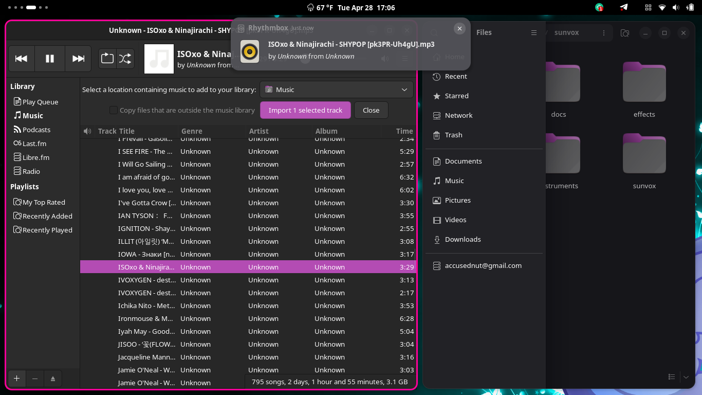
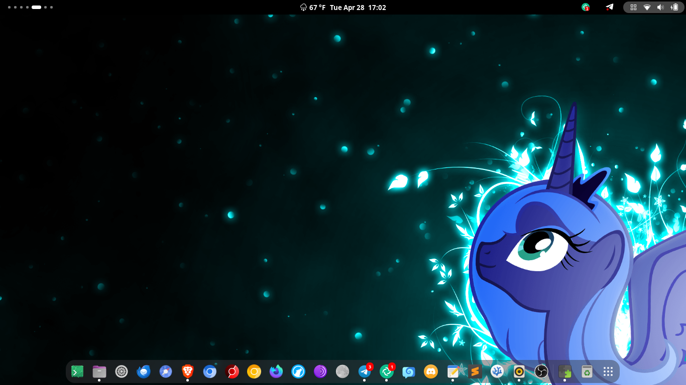
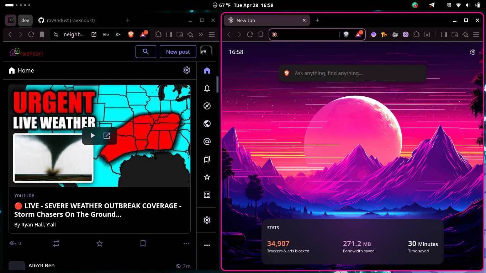
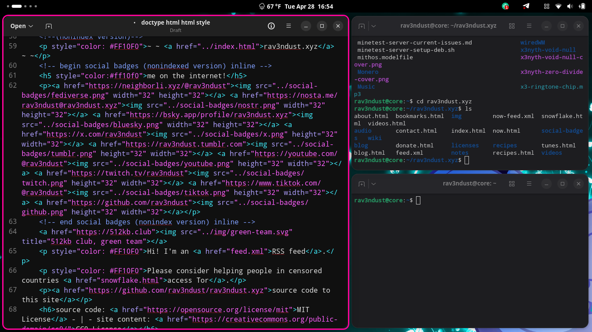

now | blog | wiki | recipes | bookmarks | contact | about | donate
* * * back home * * *
did you know you can turn gnome into a tiling window manager?
2026-04-29

As you know if you read my stuff here on my website or watch my YouTube videos or Twitch streams you know I am usually always on my main wiredWM tiling window manager setup. However, I still have a soft spot for my old favorite of the 'full' desktop environments, and that is GNOME. I keep GNOME installed on my machine in case I ever want to hop into it, and have been playing with making it into a tiling window manager as well, for people who might want to give tiling a shot but aren't sure about going all in on it with a dedicated tiling window manager.
Luckily, GNOME is already very minimal and can be extended further, and there is a very cool extension for GNOME Shell called Forge. It can give you a very cool tiling setup right inside of your GNOME desktop, and you can customize your accent colors for active window borders, configure whether or not focus follows your cursor, and define more behaviors of how Forge works.
If you want to give this extension a shot and see what tiling windows can be like, it is easy! Just grab the GNOME Extensions Manager application, search for "Forge", and press the install button. You can then go into its settings and configure it how you'd like it! Friendly tip: The Forge extension exposes some settings to the GNOME quick settings menu. Clicking in your quick settings menu should now show a new "Tiling" pill. Click on it to turn tiling on or off, or you can click on its arrow to expand it into further options.

In this one, you can see a nice and clean desktop with the GNOME dash at the bottom, inviting you to launch an app.

In this one, we see two Brave browser windows side by side.

In this one, we can see GNOME's Text Editor and a few Pytxis terminals open.
If you want to give tiling window management a shot and already have your GNOME desktop and the Extensions Manager app, why not give it a shot and see if you like it? If you do like it, you can keep using it all you want, and if you don't like it, you can simply disable and delete the extension, no harm, no foul!